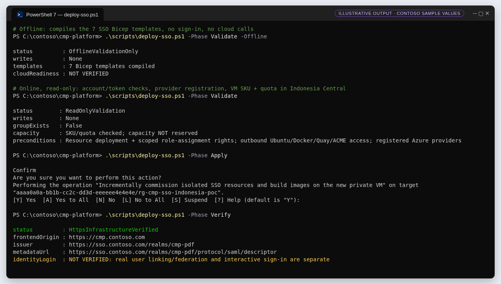
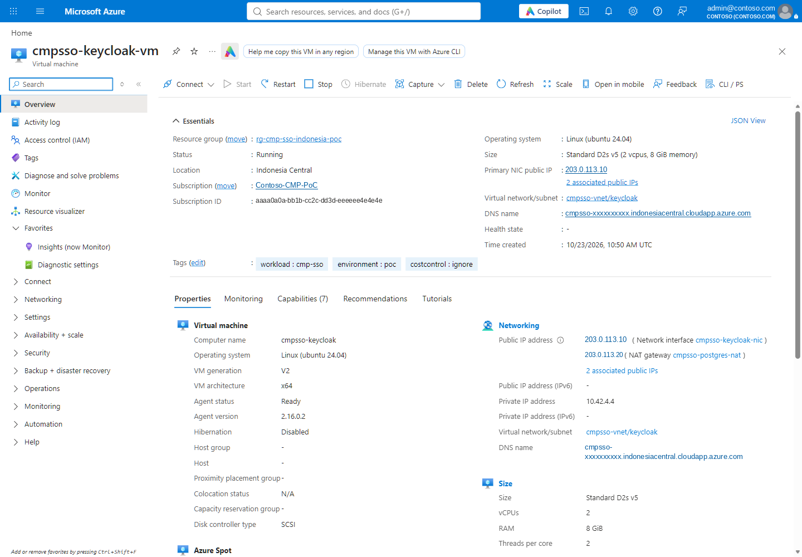
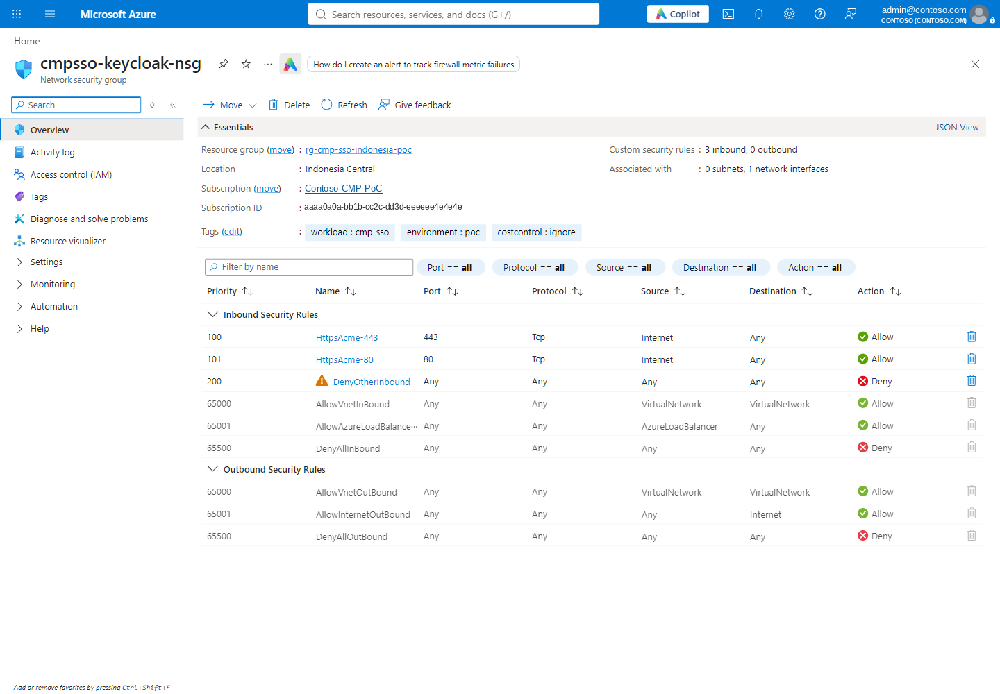
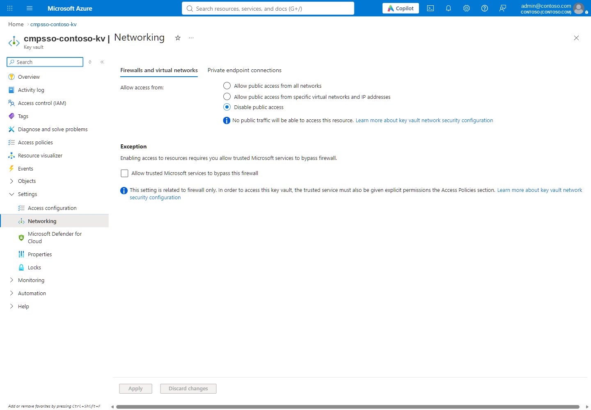

G1 · Deploy the foundation and the Keycloak VM
Validate, plan, apply and verify the isolated Azure foundation and a production-mode Keycloak on Ubuntu, with every step checkpointed and nothing claimed that was not checked.
▶ Watch this in the video walkthrough: Step 1 · Deploy Keycloak on Azure (starts at 2:07)
Outcome#
An isolated resource group in Indonesia Central with the network, private Key Vault, a PostgreSQL VM, a Keycloak VM serving the realm over HTTPS, and the CMP frontend — verified by public HTTPS discovery, SAML metadata and closed management paths. No Entra change happens in this guide.
Prerequisites#
- PowerShell 7, Azure CLI with Bicep, Node.js 24. The scripts never install tools for you.
- An Azure account with rights to deploy resources and create scoped role assignments (secret-level Key Vault RBAC, AcrPull).
- Registered resource providers: Microsoft.App, Compute, ContainerRegistry, KeyVault, ManagedIdentity, Network, OperationalInsights — checked, never auto-registered.
- Outbound access from the VMs to Ubuntu, Docker, Quay (Keycloak image) and the ACME CA (Caddy certificate).
- An existing SSH public key (no inbound SSH rule is created).
Steps#
- 1Validate offline, then online
Offline compiles the seven SSO Bicep templates without signing in. Online is read-only: it checks the signed-in account and token, provider registration, VM SKU and vCPU quota in Indonesia Central. Quota is checked, capacity is not reserved.
.\scripts\deploy-sso.ps1 -Phase Validate -Offline .\scripts\deploy-sso.ps1 -Phase Validate - 2Plan with ARM what-if
The first Plan runs a subscription-scoped what-if for the resource group and foundation before anything exists; later stages are previewed once foundation outputs are known.
.\scripts\deploy-sso.ps1 -Phase Plan - 3Apply (creates paid resources)
Apply asks for confirmation (ShouldProcess, high impact). It creates the group and foundation, seeds placeholder secrets only where missing, lets the VMs generate real secrets inside the VNet, deploys the Keycloak VM, grants per-secret access, builds the image in-region, deploys the frontend, and finishes with the same checks as Verify. Progress is checkpointed in
.azure\sso-deployment-state.json; reruns resume, they never replace a VM..\scripts\deploy-sso.ps1 -Phase Apply - 4Verify
Verify re-checks HTTPS OIDC discovery (issuer must match), SAML metadata (entityID + signing certificate), that
/admin,/realms/master,/health,/metricsreturn 404, and that the frontend answers. It explicitly reports that identity login is not verified..\scripts\deploy-sso.ps1 -Phase Verify


deploy-sso.ps1 (property names and messages from the script; Contoso values).What the scripts do#
function Test-SsoPublicEndpoints($State) {
$issuer="$($State.keycloak.origin)/realms/cmp-pdf"
Wait-CmpHttp "$issuer/.well-known/openid-configuration"
$discovery=Invoke-RestMethod -Uri "$issuer/.well-known/openid-configuration" -TimeoutSec 30
if ($discovery.issuer -cne $issuer -or -not $discovery.authorization_endpoint.StartsWith("$issuer/")) {
throw 'Public Keycloak HTTPS discovery issuer differs from stable expected issuer.'
}
Wait-CmpHttp $State.keycloak.metadataUrl
$xml=[xml](Invoke-WebRequest -Uri $State.keycloak.metadataUrl -TimeoutSec 30).Content
if ($xml.DocumentElement.GetAttribute('entityID') -cne $issuer -or
-not $xml.SelectSingleNode("//*[local-name()='KeyDescriptor'][@use='signing']//*[local-name()='X509Certificate']")) {
throw 'Public SAML metadata issuer/signing certificate is missing or unexpected.'
}
foreach ($path in @('/admin','/admin/','/admin/master/console/','/realms/master','/health','/metrics')) {
$response=Invoke-WebRequest -Uri "$($State.keycloak.origin)$path" -MaximumRedirection 0 -SkipHttpErrorCheck -TimeoutSec 30
if ($response.StatusCode -ne 404) { throw "Public management path is not closed: $path" }
}
Wait-CmpHttp "$($State.frontendOrigin)/health"
$response=Invoke-WebRequest -Uri $State.frontendOrigin -TimeoutSec 30
if ($response.StatusCode -ne 200) { throw 'Frontend HTTPS was not verified.' }
}
Keycloak VM, public IP, NIC and NSG
targetScope = 'resourceGroup'
@allowed(['cmpsso'])
param prefix string = 'cmpsso'
@allowed(['indonesiacentral'])
param location string = 'indonesiacentral'
param vaultUri string
param postgresHost string
param frontendOrigin string
@allowed(['aaaabbbb-0000-cccc-1111-dddd2222eeee'])
param tenantId string
param sshPublicKey string
param vmSize string = 'Standard_D2s_v5'
param tags object = { workload: 'cmp-sso', environment: 'poc' }
var effectiveTags = union(tags, { costcontrol: 'ignore' })
var label = '${prefix}-${take(uniqueString(subscription().id, resourceGroup().id), 10)}'
var publicRules = [for (port, i) in ['443', '80']: {
name: 'HttpsAcme-${port}'
properties: {
priority: 100 + i
direction: 'Inbound'
access: 'Allow'
protocol: 'Tcp'
sourcePortRange: '*'
destinationPortRange: port
sourceAddressPrefix: 'Internet'
destinationAddressPrefix: '*'
}
}]
resource vnet 'Microsoft.Network/virtualNetworks@2024-05-01' existing = { name: '${prefix}-vnet' }
resource ip 'Microsoft.Network/publicIPAddresses@2024-05-01' = {
name: '${prefix}-keycloak-ip'
location: location
tags: effectiveTags
sku: { name: 'Standard' }
properties: {
publicIPAllocationMethod: 'Static'
dnsSettings: { domainNameLabel: label }
}
}
resource nsg 'Microsoft.Network/networkSecurityGroups@2024-05-01' = {
name: '${prefix}-keycloak-nsg'
location: location
tags: effectiveTags
properties: {
securityRules: concat(publicRules, [{
name: 'DenyOtherInbound'
properties: {
priority: 200
direction: 'Inbound'
access: 'Deny'
protocol: '*'
sourcePortRange: '*'
destinationPortRange: '*'
sourceAddressPrefix: '*'
destinationAddressPrefix: '*'
}
}])
}
}
resource nic 'Microsoft.Network/networkInterfaces@2024-05-01' = {
name: '${prefix}-keycloak-nic'
location: location
tags: effectiveTags
properties: {
networkSecurityGroup: { id: nsg.id }
ipConfigurations: [{
name: 'primary'
properties: {
privateIPAllocationMethod: 'Static'
privateIPAddress: '10.42.4.4'
subnet: { id: '${vnet.id}/subnets/keycloak' }
publicIPAddress: { id: ip.id }
}
}]
}
}
var origin = 'https://${label}.${location}.cloudapp.azure.com'
var config = { vault_uri: vaultUri, host: postgresHost, origin: origin, frontend_origin: frontendOrigin, tenant_id: tenantId }
var cloudInit = replace(
replace(loadTextContent('sso-keycloak-cloud-init.yml'), '__INSTALLER_BASE64__', base64(loadTextContent('../bootstrap/sso-keycloak.py'))),
'__CONFIG_BASE64__', base64(string(config)))
resource vm 'Microsoft.Compute/virtualMachines@2024-07-01' = {
name: '${prefix}-keycloak-vm'
location: location
tags: effectiveTags
identity: { type: 'SystemAssigned' }
properties: {
hardwareProfile: { vmSize: vmSize }
securityProfile: { securityType: 'TrustedLaunch', uefiSettings: { secureBootEnabled: true, vTpmEnabled: true } }
storageProfile: {
diskControllerType: 'SCSI'
imageReference: { publisher: 'Canonical', offer: 'ubuntu-24_04-lts', sku: 'server', version: 'latest' }
osDisk: {
name: '${prefix}-keycloak-os'
createOption: 'FromImage'
deleteOption: 'Detach'
managedDisk: { storageAccountType: 'Premium_LRS' }
}
}
osProfile: {
computerName: '${prefix}-keycloak'
adminUsername: 'cmpvmadmin'
customData: base64(cloudInit)
linuxConfiguration: {
disablePasswordAuthentication: true
provisionVMAgent: true
ssh: { publicKeys: [{ path: '/home/cmpvmadmin/.ssh/authorized_keys', keyData: sshPublicKey }] }
}
}
networkProfile: { networkInterfaces: [{ id: nic.id, properties: { deleteOption: 'Detach' } }] }
}
}
resource osDisk 'Microsoft.Compute/disks@2024-03-02' existing = { name: '${prefix}-keycloak-os' }
resource diskTags 'Microsoft.Resources/tags@2021-04-01' = {
scope: osDisk
name: 'default'
properties: { tags: effectiveTags }
dependsOn: [vm]
}
output keycloak object = {
origin: origin
vmId: vm.id
principalId: vm.identity.principalId
metadataUrl: '${origin}/realms/cmp-pdf/protocol/saml/descriptor'
issuer: '${origin}/realms/cmp-pdf'
}
#cloud-config
write_files:
- path: /opt/cmp/sso-keycloak.py
owner: root:root
permissions: '0700'
encoding: b64
content: __INSTALLER_BASE64__
- path: /etc/cmp-sso-keycloak.json
owner: root:root
permissions: '0600'
encoding: b64
content: __CONFIG_BASE64__
- path: /etc/systemd/system/cmp-sso-keycloak-install.service
owner: root:root
permissions: '0644'
content: |
[Unit]
Description=Install isolated SSO Keycloak and automatic HTTPS
Wants=network-online.target
After=network-online.target
[Service]
Type=oneshot
ExecStart=/usr/bin/python3 -B /opt/cmp/sso-keycloak.py install
TimeoutStartSec=2400
UMask=0077
runcmd:
- [systemctl, daemon-reload]
- [systemctl, start, --no-block, cmp-sso-keycloak-install.service]
Waiting for the VM installer through managed Run Command, with bounded proof
function Invoke-SsoGuest([string]$VmId,[ValidateSet('postgres','keycloak')][string]$Operation) {
$service=if ($Operation -eq 'postgres') { 'cmp-sso-postgres' } else { 'cmp-sso-keycloak-install' }
$source=@'
set -eu
timeout 1800 cloud-init status --wait >/dev/null 2>&1
timeout 2400 sh -c 'while [ "$(systemctl show -p ActiveState --value __SERVICE__.service)" = activating ]; do sleep 5; done'
systemctl start __SERVICE__.service >/dev/null 2>&1
test "$(systemctl show -p Result --value __SERVICE__.service)" = success
test "$(systemctl show -p ExecMainStatus --value __SERVICE__.service)" = 0
__PROOF__
'@
$proof=if ($Operation -eq 'postgres') { 'printf ''{"status":"ready","operation":"postgres"}\n''' } else {
'python3 -B /opt/cmp/sso-keycloak.py configure'
}
$source=$source.Replace('__SERVICE__',$service).Replace('__PROOF__',$proof).Replace("`r`n","`n")
$name='sso-'+$Operation+'-'+[guid]::NewGuid().ToString('N')
$uri="https://management.azure.com$VmId/runCommands/${name}?api-version=2024-07-01"
$null=Invoke-CmpRest -Uri $uri -Method PUT -Body @{
location='indonesiacentral'; tags=@{costcontrol='ignore'}
properties=@{source=@{script=$source};timeoutInSeconds=6000;asyncExecution=$true;treatFailureAsDeploymentFailure=$true}
}
$deadline=[DateTime]::UtcNow.AddMinutes(110)
do {
$response=Invoke-CmpRest -Uri "$uri&`$expand=instanceView"
$p=$response.properties
if ($p.provisioningState -in @('Failed','Canceled')) { throw "SSO $Operation managed command provisioning failed: $name. Output suppressed." }
if ($p.PSObject.Properties.Name -contains 'instanceView' -and $p.instanceView) {
$view=$p.instanceView
if ($view.executionState -in @('Failed','Canceled','TimedOut')) {
throw "SSO $Operation guest failed: $name. Check guest service result, scoped vault RBAC and packages; no readiness claim."
}
if ($view.executionState -eq 'Succeeded') {
if ($view.PSObject.Properties.Name -notcontains 'exitCode' -or $view.exitCode -ne 0) {
throw "SSO $Operation completion lacks a zero guest exit code."
}
return ConvertFrom-SsoProof $view.output $Operation
}
}
Start-Sleep -Seconds 10
} while ([DateTime]::UtcNow -lt $deadline)
throw "SSO $Operation guest deadline exceeded. Inspect managed command $name before retry; never blindly replace the VM."
}
Full script: deploy-sso.ps1
#requires -Version 7.0
<#
.SYNOPSIS
Isolated, additive Indonesia Central SSO PoC. No tenant mutations, existing PoC changes or local secret material.
.DESCRIPTION
Validate/Plan are read-only. First Plan uses subscription-scoped ARM what-if before the new RG exists.
Apply incrementally commissions NEW resources, private VM-generated secrets, Keycloak VM and frontend.
Resume never redeploys/replaces existing VMs. Changed bootstrap fingerprints need explicit maintenance.
Verify checks HTTPS discovery, SAML metadata, blocked management paths and frontend health.
No identities, Entra consent, federation links, MFA claims or end-to-end login evidence are fabricated.
Single nodes are not HA; back up retained PostgreSQL volume and Caddy state before maintenance.
#>
[CmdletBinding(SupportsShouldProcess,ConfirmImpact='High')]
param(
[ValidateSet('Validate','Plan','Apply','Verify')][string]$Phase='Validate',
[ValidateSet('aaaa0a0a-bb1b-cc2c-dd3d-eeeeee4e4e4e')][string]$SubscriptionId='aaaa0a0a-bb1b-cc2c-dd3d-eeeeee4e4e4e',
[ValidateSet('aaaabbbb-0000-cccc-1111-dddd2222eeee')][string]$TenantId='aaaabbbb-0000-cccc-1111-dddd2222eeee',
[ValidateSet('rg-cmp-sso-indonesia-poc')][string]$ResourceGroupName='rg-cmp-sso-indonesia-poc',
[ValidateSet('cmpsso')][string]$Prefix='cmpsso',
[ValidateSet('indonesiacentral')][string]$Location='indonesiacentral',
[ValidateSet('admin@contoso.com')][string]$ExpectedAccount='admin@contoso.com',
[string]$SshPublicKey,
[string]$PostgresVmSize='Standard_D2s_v5',
[string]$KeycloakVmSize='Standard_D2s_v5',
[string]$ProjectsJson='[]',
[switch]$RebuildApplication,
[switch]$Offline
)
. (Join-Path $PSScriptRoot 'sso-common.ps1')
$root=Split-Path $PSScriptRoot
$statePath=Get-CmpProjectPath $root '.azure\sso-deployment-state.json'
if ($Phase -in @('Plan','Apply') -and
(Test-Path -LiteralPath (Join-Path $root '.azure\sso-admin-state.json'))) {
throw 'Use deploy-sso-admin.ps1 for Plan/Apply after admin commissioning; the original rollout would remove the admin integration. Preserve the admin state file.'
}
$scope=@{subscriptionId=$SubscriptionId;tenantId=$TenantId;resourceGroup=$ResourceGroupName;prefix=$Prefix}
Assert-SsoScope $scope
if ($Offline -and $Phase -ne 'Validate') { throw 'Offline is supported only for Validate.' }
try { $projects=ConvertFrom-Json -InputObject $ProjectsJson -NoEnumerate } catch { throw 'ProjectsJson must be a JSON array.' }
if ($projects -isnot [array]) { throw 'ProjectsJson must be an array; default [] explicitly means no configured projects.' }
foreach ($tool in @('az','node')) {
if (-not (Get-Command $tool -ErrorAction SilentlyContinue)) { throw "Missing dependency $tool. Install explicitly; no tools/extensions are auto-installed." }
}
$script:CmpSubscriptionId=$SubscriptionId
$script:CmpTenantId=$TenantId
$templates=@{}
foreach ($name in @('foundation','private-vault','sso-keycloak','sso-frontend','sso-secret-access','sso-seed-secrets','sso-foundation-plan')) {
$templates[$name]=Get-CmpTemplate (Join-Path $root "infra\$name.bicep")
}
if ($Offline) {
[pscustomobject]@{status='OfflineValidationOnly';writes='None';templates="$($templates.Count) Bicep templates compiled";cloudReadiness='NOT VERIFIED'}
return
}
Initialize-CmpContext $SubscriptionId $TenantId $ExpectedAccount
$account=Invoke-CmpAz @('account','show') -Json
if ($account.environmentName -cne 'AzureCloud' -or $account.state -cne 'Enabled') { throw 'Only an Enabled AzureCloud subscription is approved.' }
Assert-SsoToken (Get-CmpToken)
$principalId=Get-CmpDeploymentPrincipal
$hash=Get-SsoBootstrapHash $root
$state=$null
if (Test-Path -LiteralPath $statePath) {
$state=Get-Content -LiteralPath $statePath -Raw | ConvertFrom-Json -AsHashtable
Assert-SsoSavedState $state $root
foreach ($name in @('PostgresVmSize','KeycloakVmSize','SshPublicKey')) {
if ($PSBoundParameters.ContainsKey($name) -and (Get-Variable $name -ValueOnly) -cne $state[$name]) {
throw 'Existing VM size or SSH key differs; no automatic VM mutation.'
}
Set-Variable -Name $name -Value $state[$name]
}
if ($state.ContainsKey('foundation')) { Assert-CmpPrivateInventory $state }
if ($state.ContainsKey('keycloak')) { Assert-SsoKeycloakInventory $state }
}
$groupUri="https://management.azure.com/subscriptions/$SubscriptionId/resourceGroups/${ResourceGroupName}?api-version=2024-03-01"
$group=Invoke-CmpRest -Uri $groupUri -AllowNotFound
if ($group -and (-not $state -or $group.location -ne $Location -or $group.tags.'cmp-sso-scope' -cne 'isolated-v1')) {
throw 'Existing SSO RG lacks matching state/location/ownership marker. No adoption or mutation is attempted; recover the SSO state manually.'
}
if ($state -and -not $group) { throw 'Saved SSO RG is missing; explicit recovery required, not recreation.' }
if ($Phase -eq 'Verify') {
if (-not $state -or -not $state.ContainsKey('keycloak') -or -not $state.ContainsKey('applicationImage')) { throw 'Verify needs completed SSO state.' }
Test-SsoPublicEndpoints $state
[pscustomobject]@{status='HttpsInfrastructureVerified';frontendOrigin=$state.frontendOrigin;issuer=$state.keycloak.issuer;
metadataUrl=$state.keycloak.metadataUrl;identityLogin='NOT VERIFIED: real user linking/federation and interactive sign-in are separate'}
return
}
Test-SsoProviders
$usage=Invoke-CmpAz @('vm','list-usage','--location',$Location) -Json
$additional=@{}
$regional=0
foreach ($vm in @(@{name='postgres';size=$PostgresVmSize},@{name='keycloak';size=$KeycloakVmSize})) {
$skus=Invoke-CmpAz @('vm','list-skus','--location',$Location,'--resource-type','virtualMachines','--size',$vm.size,'--all') -Json
$allocated=$state -and (($vm.name -eq 'postgres' -and $state.ContainsKey('foundation')) -or
($vm.name -eq 'keycloak' -and $state.ContainsKey('keycloak')))
Assert-CmpVmCapability $skus $usage $vm.size $Location -ExistingAllocationVerified:$allocated
if (-not $allocated) {
$sku=@($skus | Where-Object { $_.name -ceq $vm.size })[0]
$cores=[int](@($sku.capabilities | Where-Object name -eq 'vCPUs')[0].value)
if (-not $additional.ContainsKey($sku.family)) { $additional[$sku.family]=0 }
$additional[$sku.family]+=$cores
$regional+=$cores
}
}
$additional['cores']=$regional
foreach ($family in $additional.Keys) {
$q=@($usage | Where-Object { $_.name.value -ceq $family })[0]
if ([double]$q.limit-[double]$q.currentValue -lt $additional[$family]) { throw "Combined two-VM regional/family quota is insufficient: $family." }
}
if ($Phase -eq 'Validate') {
[pscustomobject]@{status='ReadOnlyValidation';writes='None';groupExists=[bool]$group;capacity='SKU/quota checked; capacity NOT reserved';
preconditions='Resource deployment + scoped role-assignment rights; outbound Ubuntu/Docker/Quay/ACME access; registered Azure providers'}
return
}
if (-not $SshPublicKey) {
$oldVmId="/subscriptions/$SubscriptionId/resourceGroups/rg-cmp-indonesia-poc/providers/Microsoft.Compute/virtualMachines/cmppoc-postgres-vm"
$old=Invoke-CmpAz @('vm','show','--ids',$oldVmId) -Json
$keys=@($old.osProfile.linuxConfiguration.ssh.publicKeys)
if ($keys.Count -ne 1) { throw 'Supply -SshPublicKey with an existing public key value; old VM has no unambiguous public key metadata.' }
$SshPublicKey=$keys[0].keyData
}
Assert-CmpSshPublicKey $SshPublicKey
$foundationParameters=@{prefix=$Prefix;location=$Location;deploymentPrincipalId=$principalId;sshPublicKey=$SshPublicKey;
postgresVmSize=$PostgresVmSize;ssoMode=$true;tags=@{workload='cmp-sso';environment='poc'}}
if ($Phase -eq 'Plan') {
if (-not $group) {
$changes = @(Invoke-CmpDeployment '' 'cmpsso-foundation-plan' $templates['sso-foundation-plan'] `
$foundationParameters -Preview -SubscriptionScope)
[pscustomobject]@{status='ArmFoundationCreationPlan';writes='None';resourceGroup=$ResourceGroupName;region=$Location;
changes=$changes;next='Foundation preview only; private-vault, Keycloak and frontend are staged after foundation outputs exist.'}
} else {
if (-not $state.ContainsKey('foundation')) { throw 'Partial foundation: inspect deployment operations before proceeding.' }
# Existing VMs are inventory-only: never plan their redeployment.
if ($state.ContainsKey('applicationImage') -and $state.ContainsKey('keycloak')) {
$f=$state.foundation
Invoke-CmpDeployment $ResourceGroupName 'cmpsso-frontend' $templates['sso-frontend'] @{
prefix=$Prefix;environmentName=$f.environmentName;defaultDomain=$f.defaultDomain;registryServer=$f.registryServer;
applicationImage=$state.applicationImage;vaultUri=$f.vaultUri;keycloakOrigin=$state.keycloak.origin;tenantId=$TenantId;projectsJson=$ProjectsJson
} -Preview
} else { [pscustomobject]@{status='PartialSsoPlan';writes='None';next='Apply resumes missing bootstrap/build/frontend stages only'} }
}
return
}
if (-not $PSCmdlet.ShouldProcess("$SubscriptionId/$ResourceGroupName",'Incrementally commission isolated SSO resources and build images on the new private VM')) { return }
function Save-SsoState {
$directory=Split-Path $statePath
if (-not (Test-Path -LiteralPath $directory)) { $null=New-Item -ItemType Directory -Path $directory }
$pending="$statePath.pending"
$state | ConvertTo-Json -Depth 30 | Set-Content -LiteralPath $pending -Encoding utf8
Move-Item -LiteralPath $pending -Destination $statePath -Force
}
if (-not $group) {
$null=Invoke-CmpRest -Uri $groupUri -Method PUT -Body @{location=$Location;tags=@{costcontrol='ignore';'cmp-sso-scope'='isolated-v1'}}
$state=@{}+$scope
$state.bootstrapHash=$hash
$state.PostgresVmSize=$PostgresVmSize
$state.KeycloakVmSize=$KeycloakVmSize
$state.PostgresDataDiskGiB=64
$state.SshPublicKey=$SshPublicKey
$state.databaseHosting='vm'
$state.vmBootstrapHash=Get-CmpVmBootstrapHash $root
Save-SsoState
}
if (-not $state.ContainsKey('foundation')) {
$orphan=Invoke-CmpRest -Uri "https://management.azure.com/subscriptions/$SubscriptionId/resourceGroups/$ResourceGroupName/providers/Microsoft.Compute/virtualMachines/cmpsso-postgres-vm?api-version=2024-07-01" -AllowNotFound
if ($orphan) { throw 'Existing foundation VM without completed checkpoint. Recover cmpsso-foundation outputs into SSO state manually; never rerun blindly.' }
$outputs=Invoke-CmpDeployment $ResourceGroupName 'cmpsso-foundation' $templates.foundation $foundationParameters
$state.foundation=$outputs.foundation.value | ConvertTo-Json -Depth 30 | ConvertFrom-Json -AsHashtable
$state.frontendOrigin="https://cmpsso-frontend.$($state.foundation.defaultDomain)"
Save-SsoState
}
$f=$state.foundation
Assert-CmpPrivateInventory $state
$null=Invoke-CmpDeployment $ResourceGroupName 'cmpsso-private-vault' $templates['private-vault'] @{prefix=$Prefix;vaultName=$f.vaultName}
$missing=@(Get-SsoMissingSecrets $f)
if ($missing.Count) {
$null=Invoke-CmpDeployment $ResourceGroupName 'cmpsso-seed-secrets' $templates['sso-seed-secrets'] @{vaultName=$f.vaultName;missingNames=$missing}
}
function Grant-SsoSecrets([string]$Name,[string]$Principal,[string]$Access,[string[]]$Names) {
$null=Invoke-CmpDeployment $ResourceGroupName $Name $templates['sso-secret-access'] @{
vaultName=$f.vaultName;principalId=$Principal;access=$Access;secretNames=$Names}
}
Grant-SsoSecrets 'cmpsso-db-secrets' $f.postgresPrincipalId 'write' @('cmp-database-url','postgres-ca','session-secret','keycloak-db-password','keycloak-admin-password')
$null=Invoke-SsoGuest $f.postgresVmId 'postgres'
if (-not $state.ContainsKey('keycloak')) {
$orphan=Invoke-CmpRest -Uri "https://management.azure.com/subscriptions/$SubscriptionId/resourceGroups/$ResourceGroupName/providers/Microsoft.Compute/virtualMachines/cmpsso-keycloak-vm?api-version=2024-07-01" -AllowNotFound
if ($orphan) { throw 'Existing Keycloak VM without completed checkpoint. Recover cmpsso-keycloak outputs into SSO state manually; never redeploy blindly.' }
$outputs=Invoke-CmpDeployment $ResourceGroupName 'cmpsso-keycloak' $templates['sso-keycloak'] @{
vaultUri=$f.vaultUri;postgresHost=$f.postgresHost;frontendOrigin=$state.frontendOrigin;tenantId=$TenantId;
sshPublicKey=$SshPublicKey;vmSize=$KeycloakVmSize}
$state.keycloak=$outputs.keycloak.value | ConvertTo-Json -Depth 20 | ConvertFrom-Json -AsHashtable
$state.keycloakOrigin=$state.keycloak.origin
$state.metadataUrl=$state.keycloak.metadataUrl
Save-SsoState
}
Assert-SsoKeycloakInventory $state
Grant-SsoSecrets 'cmpsso-keycloak-read' $state.keycloak.principalId 'read' @('postgres-ca','keycloak-db-password','keycloak-admin-password')
Grant-SsoSecrets 'cmpsso-keycloak-write' $state.keycloak.principalId 'write' @('keycloak-client-secret')
$null=Invoke-SsoGuest $state.keycloak.vmId 'keycloak'
$frontendIdentity=Invoke-CmpAz @('identity','show','--ids',$f.frontendIdentityId) -Json
Grant-SsoSecrets 'cmpsso-frontend-read' $frontendIdentity.principalId 'read' @('postgres-ca','cmp-database-url','session-secret','keycloak-client-secret')
if ($RebuildApplication -or -not $state.ContainsKey('applicationImage')) {
$built=Build-CmpInRegionImages -State $state -Root $root -Confirm:$false
$state.applicationImage=$built.applicationImage
$state.sourceHash=$built.sourceHash
Save-SsoState
}
$null=Invoke-CmpDeployment $ResourceGroupName 'cmpsso-frontend' $templates['sso-frontend'] @{
prefix=$Prefix;environmentName=$f.environmentName;defaultDomain=$f.defaultDomain;registryServer=$f.registryServer;
applicationImage=$state.applicationImage;vaultUri=$f.vaultUri;keycloakOrigin=$state.keycloak.origin;tenantId=$TenantId;projectsJson=$ProjectsJson}
Test-SsoPublicEndpoints $state
$state.status='HttpsInfrastructureVerified'
Save-SsoState
[pscustomobject]@{status=$state.status;statePath=$statePath;frontendOrigin=$state.frontendOrigin;keycloakOrigin=$state.keycloak.origin;
metadataUrl=$state.keycloak.metadataUrl;identityLogin='NOT VERIFIED: link real identities and configure Entra federation separately'}
Evidence#






Adapting the scripts for Contoso#
The PoC scripts are deliberately pinned to one subscription, tenant, resource group, prefix and region (ValidateSet parameters and assertions such as Assert-SsoScope). That prevents accidental deployment elsewhere, and it means you must edit those guards for your environment.
| Item | PoC | Contoso production |
|---|---|---|
| Keycloak public origin | Azure DNS label cmpsso-<10 chars>.indonesiacentral.cloudapp.azure.com | Custom domain sso.contoso.com (CNAME to the public IP DNS label); update validate_config() and Assert-SsoSavedState patterns |
| Realm ID | cmp-pdf | Choose the final realm name before federation — it is part of the issuer; renaming later is an identity migration |
| Frontend origin | Container Apps default domain | cmp.contoso.com with a managed certificate; update the Keycloak redirect URI |
| Subscription / tenant pins | ValidateSet on PoC IDs | Contoso IDs (or parameterise with approval gates) |
Decide the issuer (https://sso.contoso.com/realms/<realm>) once. Entra's federation record, every guest's external-IdP association and Keycloak's persistent IDs all hang off it.
targetScope = 'resourceGroup'
resource subnetNsg 'Microsoft.Network/networkSecurityGroups@2024-05-01' existing = {
name: 'cmpsso-vnet-keycloak-nsg-indonesiacentral'
}
resource publicIngress 'Microsoft.Network/networkSecurityGroups/securityRules@2024-05-01' = [for (port, index) in ['443', '80']: {
parent: subnetNsg
name: 'HttpsAcme-${port}'
properties: {
priority: 100 + index
direction: 'Inbound'
access: 'Allow'
protocol: 'Tcp'
sourcePortRange: '*'
destinationPortRange: port
sourceAddressPrefix: 'Internet'
destinationAddressPrefix: '10.42.4.4'
description: 'Restore only the existing Keycloak HTTPS and ACME ingress'
}
}]